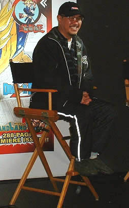

A k i r a T o r o y a m a
Akira est un auteur de manga qui est connu dans le monde entier. Il a fait plusieurs mangas qui ont été connu comme Dragon ball, Dr Slump, Sand land etc... Avant d'être
Akira ne voulait pas poursuivre ses études parcqu'il a voulu devenir auteur de bande de Dessiner. Au moment qu'il voulait commencer sa Carrière, il était au chômage et il vivait chez ses parents. Il a essayé à de nombreuse reprise essayer de poster ses créations, mais sauf qu'aucun d'eux n'a été un succès.Il continua de persévérer jusqu'à un moment un certain Kazuhiko Torishima l'appelait pour lui dire qu'il est intéressé par ses créations. Akira lança sa première série qui a été un échec, Wonderland. Ensuite il lança une nouvelle série de mangas dont il a été un succès et Toei animation a même sorti une série, c'est Dr Slump. A la fin de Dr Slump, Akira va sortir un manga dont il va être connu a travers dans le monde Dragon ball. Dragon ball Aura un grand succès que même toei animation va transformer ce manga en animée pour les nombreux fans qui sont intéreser par l'oeuvre. Il y aura plusieurs types de Dragon ball comme (Dragonball Z, Super et le GT), il y aura également plusieurs films comme (Broly le super Guerrier,Battle of Gods, etc..) Certains createurs feront même des jeux Dragon ball comme (Dragon ball fighter Z,Dragonball Xenoverse,Dragonball Kakarot, etc). Une prochaine "saga" de Dragon ball sortira cet année, c'est DRAGON BALL Daima. Malheureusement Akira est mort d'une hématone sous-dural aiguë alors qu'il avait seulement soixante-huit ans et suite a sa mort il aurait "choqué le monde".
L'image d'akira toroyama vous envoie sur son site wikipedia
